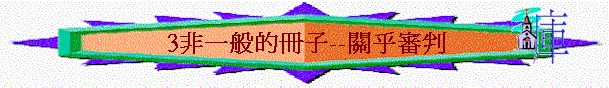

經文:啟20:11-15 21:3-8
引言:v.12題到一本「生命冊」,在讀書時期我們有沒有(兒女)冊子? 裏面寫甚麼? 重不重要?
or
活動:如果今天派成績表(給你或你的兒女/工程評估表，你最想評估的人寫下什麼評語？ 試寫出（每人有一張紙）
～在天上也有一本冊子叫「生命冊」,講甚麼? 同你我有甚麼關係?
一.生命冊的背景
1. v.11-12聖經說將來死了的人,他們會去到那裏? 見到甚麼? 誰坐在寶座中?
2.你相信人死後是會有另一個世界嗎? 為甚麼?
二.生命冊的內容
1. v.12又題到「生命冊」,單憑字面,這冊子記載關乎甚麼事情?
2.這冊子對將來死了的人有甚麼重要?
3.有沒有試過放榜?(小學,中學,報學校,參加比賽等結果….) 當自己的名字在榜上或不在榜上時,有甚麼感受?
4.若將來的人,名字,沒記在冊上,會怎樣?
三.火湖的可怕
1. v.15題到火湖, 火湖是甚麼地方? 有甚麼可怕?(啟21:8,賽66:24) 同中國人的觀念是否相同?
2.你認為甚麼人會落火湖?
3.聖經21:8題到甚麼人會有分在火湖中?
4.「膽怯」(不認主),「不信的」「行邪術的」「拜偶像的」似乎是對神,你接受到一個兒子對親生父親不信,不認,寧願認另一個為父親嗎?(原來在世上,很多人對神(我們的天父)也是如此的!)
5.「殺人的」「淫亂的」「說謊話的」似乎是對人,你覺得今天的社會,最易犯的是那種?有沒有見過?
6.如果要勇敢面對自己,我們在對神,對人上有否有虧欠?
7.這些人的結局會怎樣?
四.天堂的福樂
1.原來火湖是那麼可怕的? 天堂又如何? 你心目中的天堂是怎樣的?
2.聖經21:1-5又怎樣描述天堂?
3.有甚麼情景,只會在天堂出現,地上是沒可能發生的?
4,你最渴望是那種情景?
5.聖經說甚麼人可以上天堂?(約3:36)
五.人的回應
1.如果有「火湖」與「天堂」給你選擇,你會選擇那個?
2.若有一天離開世界(百年歸老),你估計你的名字會在生命冊嗎? 為甚麼?
3.你願意今天接受耶穌,信耶穌得永生嗎?